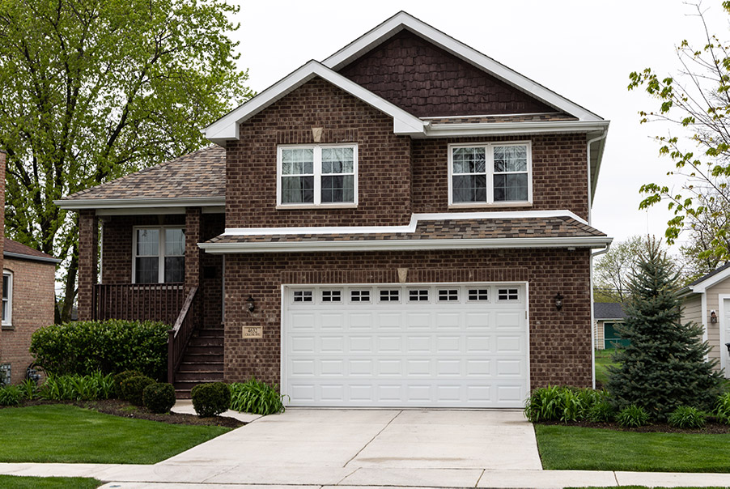

In Lyons, Mayor Chris Getty’s unusual house purchase raises questions of cozy deals with political supporters.

Mayor Chris Getty's house on Cracow Avenue
April 2014
Lyons purchases the property for $40,900 after demolishing a home on the site.Nov. 2014 – Aug. 2015
Skyway Homes contributes $3,000 to Getty’s campaign fund.Oct. 2015
Lyons sells the property to Skyway Homes for $27,500 after Skyway is the only bidder. The village takes a loss of more than $13,000.Jan. 2016
Skyway Homes contributes $5,000 to Getty's campaign fund.June 2016
Skyway Homes builds a new home and sells it to Lyons Mayor Chris Getty and his wife for $291,500 without listing it on the market.July 2016 – Feb. 2019
Skyway Homes and affiliate M & F Masonry contribute $18,000 to Getty’s campaign fund.
<% if (COPY.labels.footnote) { %>
<% } %>